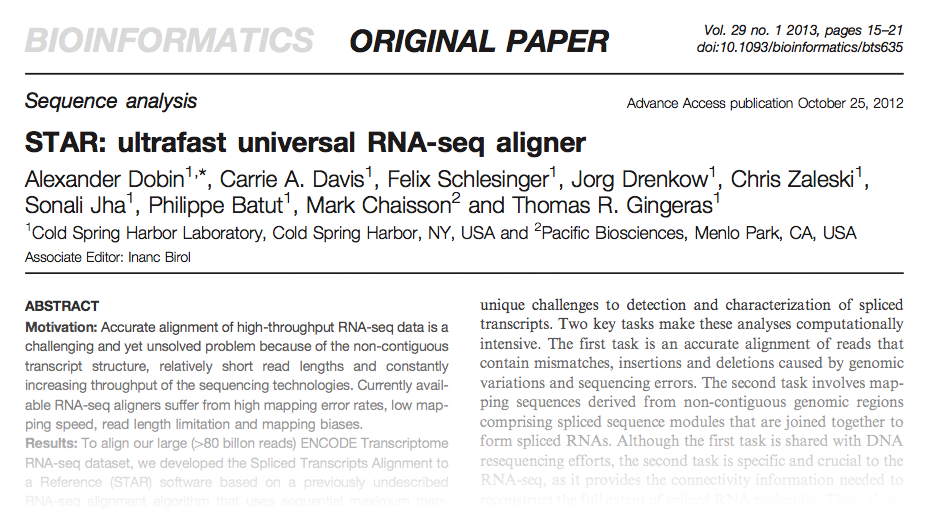

A Bioinformatics Paper Review

By Craig Sketchley
Introduction
What is STAR?
"Spliced Transcripts Alignment to a Reference" (STAR)
Algorithm
Intro to the algorithm section...
Seed Search
Write about the seed search algorithm...
Algorithm
Write about the clustering algorithm...
Results
Write about the results...
Discussion
Write the intro...